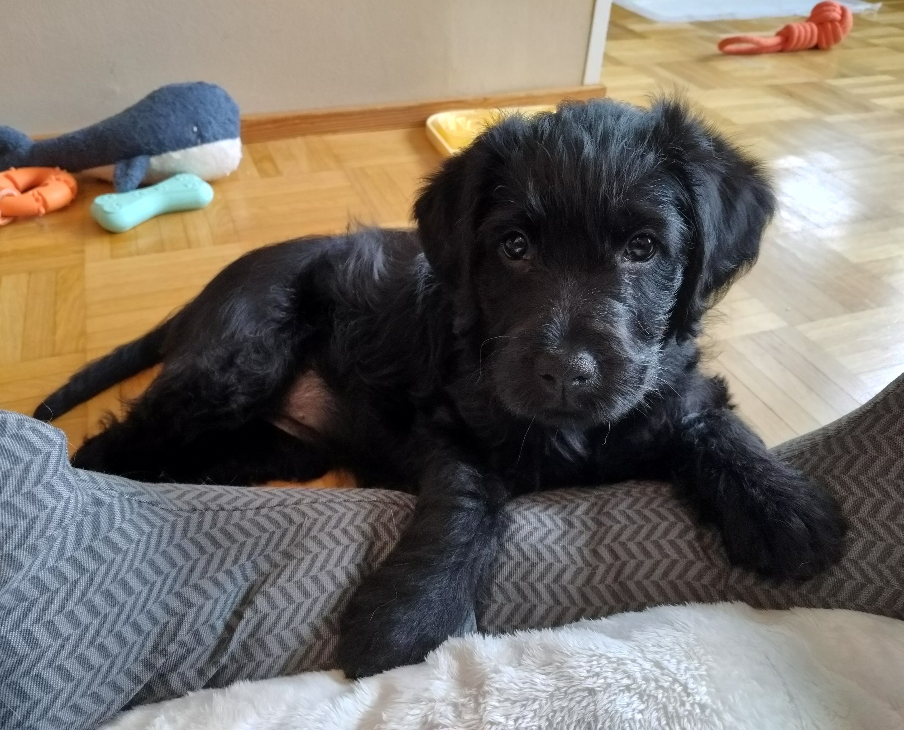
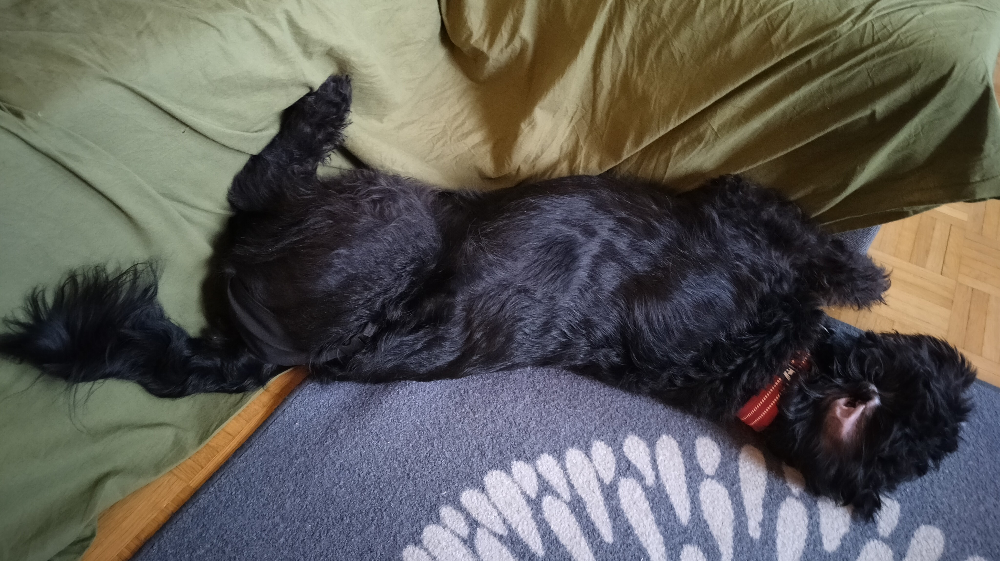
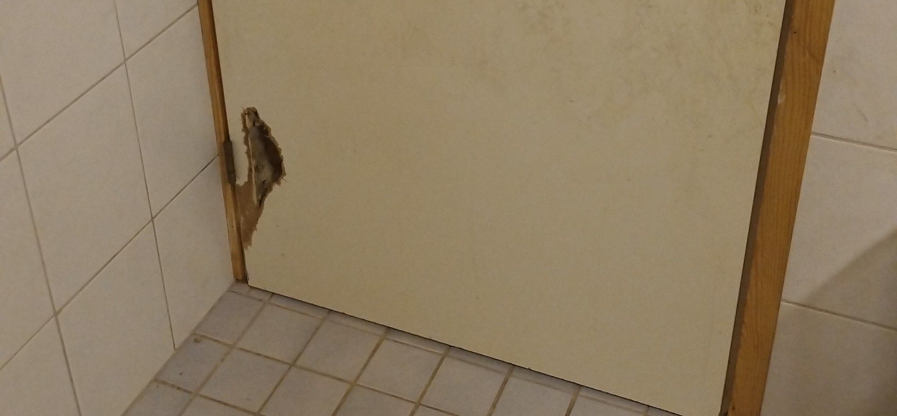

Kamu
Kamu is a puppy of 11 months which makes her a teenagers - and we all know what teens are like. She is a mixed breed, mostly labrador with some percentage of poodle thrown in for good measure. Because she is a mixed breed, I had no idea how she would turn out to look: how big she would grow and what her fur would look like. She was absolutely adorable when she was tiny, as you can see.

The commands Kamu can do
- Recall
- Down
- Sit
- Paw
The commands Kamu can do when you have food
- Stay
- Lie down
- The other paw
- Release

I have been led to believe that both labrador and poodle as breeds are above average in terms of intelligence, but I have reason to doubt. I mean - my previous dog of indeterminate breed could open doors, even the locked front door. What does this one do?

But you can't be angry with someone who loves you that much, can you? Just look at that little darling.